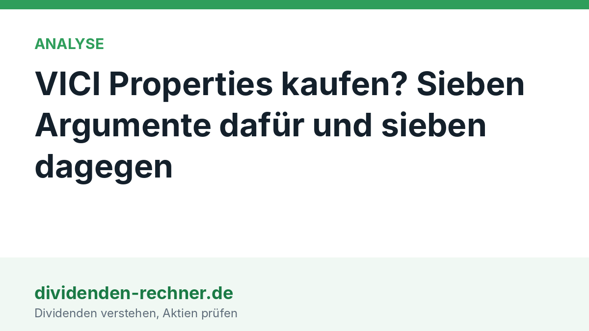

Analyse

VICI Properties kaufen? Sieben Argumente dafür und sieben dagegen
$VICI
Die Casino-Vermieterin zahlt 7,2 % Dividende, hat aber wenige große Mieter und steigende Zinskosten. Was für und gegen einen Kauf der VICI-Aktie spricht, abgewogen mit den Zahlen aus dem Aktien-Hub und der aktuellen Recherche.

Kurz gesagt
Dafür: hohe Rendite von 7,2 %, langlaufende Mietverträge mit eingebauten Erhöhungen, eine Dividende, die rund 74 % des operativen Gewinns kostet, und eine Aktie, die im Hub unter Buchwert gehandelt wird. Dagegen: Abhängigkeit von Caesars und MGM, Konzentration auf Las Vegas, teureres Geld für die Refinanzierung ab 2027 und eine Notenbank, die die Zinsen erhöht. Der Kern: Wer VICI kauft, kauft Planbarkeit und nimmt ein Klumpenrisiko in Kauf.
Eine Rendite von 7,2 % wirkt auf Dividendenanleger wie ein Magnet und gleichzeitig wie ein Warnschild. Bei VICI Properties, der Vermieterin von Caesars Palace, Venetian und MGM Grand, sind beide Eindrücke begründet. Wie das Geschäft aufgebaut ist und was die Zahlen vom dritten Quartal zeigen, steht in unserer Analyse vom Samstag. Hier geht es um die Abwägung: Was spricht für einen Kauf, was dagegen, und was lässt sich offenbar nicht abschließend beurteilen?
Was für VICI spricht
1. Die Rendite liegt weit über dem Marktzins
Die Dividendenrendite von 7,2 % liegt rund 2,3 Prozentpunkte über der Rendite zehnjähriger US-Staatsanleihen von zuletzt etwa 4,9 %. Dazu kommt, dass die Dividende vermutlich weiter steigt. Anleger bekommen also mehr als den Marktzins und eine Chance auf Zuwachs.
2. Die Verträge laufen lange und enthalten Erhöhungen
VICI vermietet nach dem Muster langer Verträge, bei denen der Mieter Steuern, Versicherung und Instandhaltung trägt. Die Mieten steigen jedes Jahr, gestaffelt oder an die Inflation gekoppelt. Das erklärt, warum der operative Gewinn je Aktie auch in einem schwierigen Quartal um 4,3 % wuchs. Die Prognose für 2026 hob das Management auf 2,47 bis 2,48 $ je Aktie an.
3. Die Dividende ist solide gedeckt
1,84 $ Dividende je Aktie stehen 2,47 bis 2,48 $ operativer Gewinn gegenüber, das sind rund 74 %. Im Hub fließen 74 % des freien Cashflows in die Ausschüttung. Das lässt Raum für Erhöhungen, ohne dass der Konzern Schulden aufnehmen muss, um die Dividende zu zahlen.
4. Las Vegas und regionale Casinos laufen
Die Einnahmen der Spielbanken am Strip stiegen im dritten Quartal um 1,8 %, im Juli um 3,6 %. Landesweit wuchsen die Erlöse der kommerziellen Casinos bis Juli um rund 6 %. Mieter, die gut verdienen, zahlen ihre Miete eher zuverlässig.
5. Die Aktie ist günstiger als Konkurrenten
Im Hub kostet die Aktie das 0,96-Fache des Buchwerts, Realty Income das 1,4-Fache, NNN REIT das 1,8-Fache. Das Kurs-Gewinn-Verhältnis liegt bei 11,5. Eine Aktie unter Buchwert ist bei einem Immobilienkonzern ein mögliches Zeichen, dass der Markt die Risiken stark einpreist.
6. Das Management hat Spielraum
Der Verwaltungsrat genehmigte einen Aktienrückkauf über bis zu 2 Mrd. $. Außerdem hat VICI mit knapp 2,5 Mrd. $ Liquidität Luft für die Refinanzierung. Die Zahl der Mieter wächst, im laufenden Jahr kamen mehrere neue hinzu.
7. Der Gewinn wächst auch ohne große Zukäufe
Der Umsatz stieg im Hub um 4,1 %, der Gewinn um 3,6 %. Wer eine Aktie sucht, die ohne Übernahmen wächst, findet bei VICI zumindest einen Grundbaustein.
Was gegen VICI spricht
1. Wenige Mieter bestimmen das Ergebnis
Caesars und MGM stellen Schätzungen zufolge zusammen rund 70 % der Mieten. Fällt einer der beiden aus oder verlangt niedrigere Mieten, trifft das den Konzern direkt. Mit Caesars verhandelt VICI offenbar bereits über die Zukunft des Vertrags über die regionalen Casinos, einen Zeitplan nennt das Management nicht.
2. Las Vegas ist fast die Hälfte der Miete
Knapp die Hälfte der Einnahmen kommt aus einer einzigen Stadt. Im Sommer wirkte sich der Wegfall der Fluggesellschaft Spirit auf die Besucherzahlen aus. Ein Abschwung in Las Vegas träfe VICI deutlich stärker als einen breit gestreuten Vermieter.
3. Die Vorsorge für Caesars war hoch
Im dritten Quartal buchte VICI 458 Mio. $ für mögliche Ausfälle, davon 313 Mio. $ für Caesars. Der Gewinn nach Steuern sank dadurch um 55 %. Geld ist nicht abgeflossen, aber die Zahl zeigt, wie der Konzern selbst das Risiko einschätzt.
4. Die Refinanzierung wird teurer
Im Februar 2027 werden Anleihen über 1,5 Mrd. $ fällig, eine davon mit nur 3,75 % Zins. Neue Anleihen kosten VICI zuletzt etwas mehr als 5,4 %. Die Nettoschulden betragen im Hub das 4,5-Fache des operativen Gewinns vor Abschreibungen, die Zinsdeckung liegt bei 4,3. Höhere Zinsen drücken auf den Gewinn und lassen weniger Raum für die Dividendenerhöhung.
5. Die Notenbank erhöht die Zinsen
Die US-Notenbank entscheidet am 9. Dezember, und eine Erhöhung um 0,25 Prozentpunkte gilt als nahezu sicher. Immobilienwerte reagieren auf steigende Zinsen meist mit Kursverlusten, weil festverzinsliche Anlagen attraktiver werden.
6. Das Wachstum stockt
Im dritten Quartal schloss VICI keine neuen Geschäfte ab. Bei dem aktuellen Kurs von knapp 23 € rechnen sich Zukäufe zu üblichen Mietrenditen von 7 bis 8 % nach Einschätzung von Beobachtern kaum noch für die Aktionäre, weil das eigene Kapital teurer ist. Der Rückkauf der eigenen Aktien ist außerdem keine feste Zusage.
7. Die Rendite ist auch ein Preis
Die Aktie notierte Ende Oktober mit rund 24 $ nahe dem unteren Ende ihrer Jahresspanne von 22,43 bis 30,83 $. Dass die Rendite so hoch ist, hängt vermutlich auch damit zusammen, dass der Markt Risiken einpreist, die in den Zahlen noch nicht sichtbar sind.
So lässt sich das einordnen
VICI lässt sich als Anleihe mit Wachstumsoption lesen: eine hohe laufende Zahlung, solide gedeckt, mit eingebauten Erhöhungen und einem Mieter-Klumpenrisiko. Wer die Dividende zum Einkommen braucht und das Klumpenrisiko tragen kann, findet hier eine höhere Rendite als bei Realty Income oder NNN REIT. Wer es breiter streuen möchte, ist bei Realty Income oder NNN REIT besser bedient, mit weniger Rendite, aber auch weniger Abhängigkeit von Las Vegas.
Drei Termine zeigen in den nächsten Monaten, wohin sich die Argumente neigen: die Zinsentscheidung der Fed am 9. Dezember, die Verlängerungsprüfung beim Fontainebleau-Darlehen im Januar und die Refinanzierung der Anleihen im Februar.
Das ist keine Anlageberatung.
Quellen
Bei Google als bevorzugte Quelle hinzufügen
Hinweis: Dieser Text dient der allgemeinen Information und ist weder Anlage-, Steuer- noch Rechtsberatung. Kapitalanlagen sind mit Risiken verbunden, bis hin zum Totalverlust.